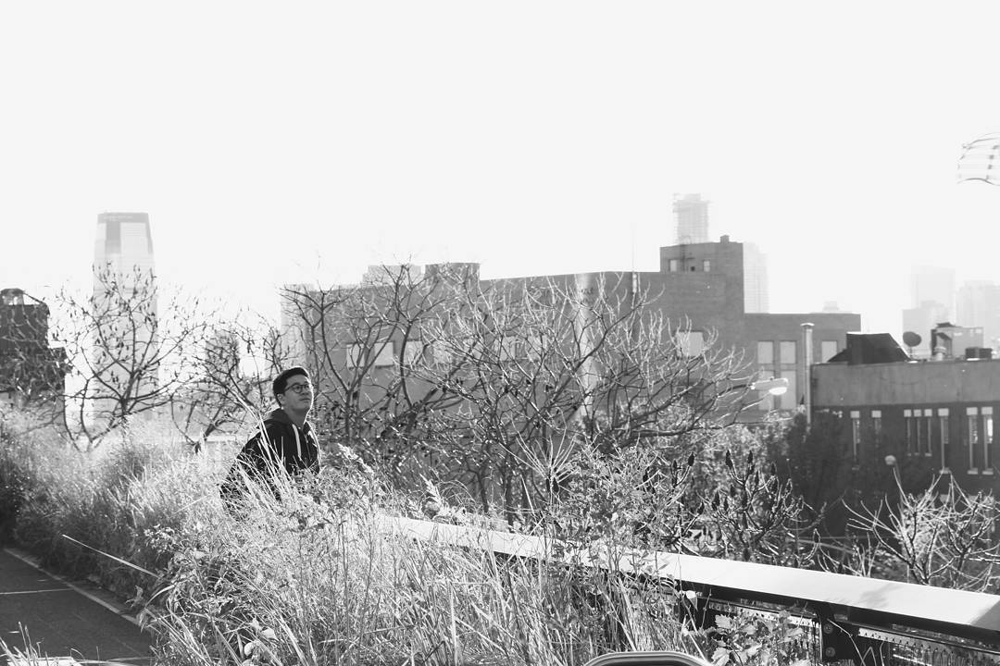
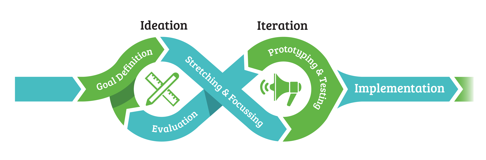

I'm a designer / urbanist / storyteller*
*I'm passionate about creating experiences that connect with people.

I'm currently a Designer in the Creative Studio at FORREC Ltd.
Stories and people shape everything I do, whether in the form of architecture or digital media. People make stories meaningful, and I'm passionate about creating opportunities for social impact. I create interventions, interactives, and experiences that ignite play  , curiosity
, curiosity  , and happiness
, and happiness  .
.
I'm also a big fan of youth-engagement, travel, and epic grilled cheese sandwiches.
Find me on Twitter @jamiemkwan, sharing immediate thoughts and moments from my day.
If you're more of a visual person, you can find my #wanderlust stories on Instagram
Interested in working together? Hit me up at jamie[at]studiobud.ca
Find me on Twitter @jamiemkwan, sharing immediate thoughts and moments from my day.
If you're more of a visual person, you can find my #wanderlust stories on Instagram
Interested in working together? Hit me up at jamie[at]studiobud.ca
Here are a few things I believe in:
- Design is universal. If you know the process of design, you can apply creativity in any problem solving context. That's also why I bet on young minds that can think freely. #studiobud
- 
- Form Follows Narrative. Technology evolves quickly, but as long as your storytelling and emotional depth are intact, that's where people will connect with an experience. (Thanks for teaching me that, Jake Barton!)
- "The greatest mistake you can make in life is to be continually fearing you will make one." — Elbert Hubbard
- Fail Fast. I've only recently gotten over the fact that failure is non-existant — as long as you learn from any mistake you've made. I'm a big believer that the faster you iterate, the faster you can get to a meaningful solution.